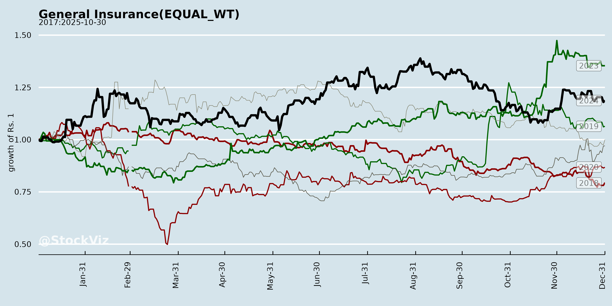
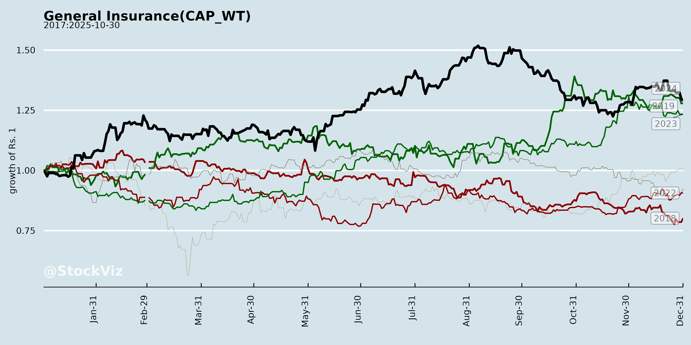
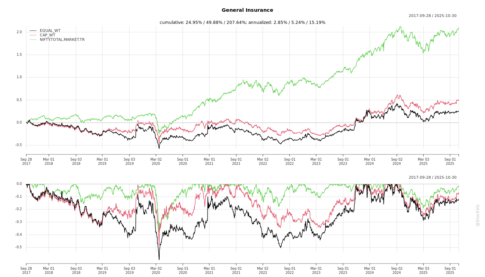
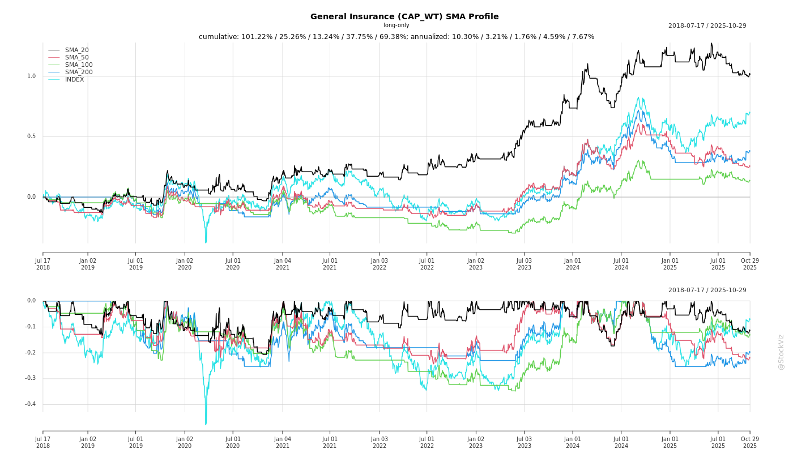

General Insurance
Industry Metrics
February 20, 2026
Annual Returns


Cumulative Returns and Drawdowns

SMA Scenarios

Current Distance from SMA
Rolling Returns


Market Cap
EBIT (% of Industry Total)
Revenue (% of Industry Total)
AI Summaries
Analyst
asof: 2025-11-30
Summary Analysis of Indian General Insurance Sector (Based on Q2 & H1 FY2026 Earnings Transcripts and Announcements)
The analysis draws from key players like ICICI Lombard (private leader), New India Assurance (PSU), and others (GIC Re, Go Digit, Star Health, Niva Bupa), reflecting sector trends for H1 FY2026 (Apr-Sep 2025). Industry GDPI grew 7.3% YoY (10.5% ex-crop/mass health); private players showed resilience amid competition, while PSUs gained market share via growth focus. Reforms (GST overhaul) are pivotal. Below is a structured summary of headwinds, tailwinds, growth prospects, and key risks.
Headwinds
- Pricing/Profitability Pressure in Motor: Industry growth 7.6%, but CoR elevated at 125% due to aggressive pricing/competition. ICICI Lombard grew 2.2% (vs industry), citing muted H1 sales; New India noted persistent TP premium inadequacy despite demand for hikes.
- CAT Losses & Weather Volatility: Prolonged monsoons/floods impacted Fire/Property (e.g., ICICI CoR 104%; New India ICR up 5% to 104.2%). Multiple small events hit net accounts without reinsurance recovery.
- Cost Inflation: Wage revision provisions (New India: ₹1,680 Cr one-time) and GST ITC loss on health/auto (ICICI: absorbed fully, ~₹100 Cr hit est.). Commission ratios up (mix-driven); operating expenses rose (New India 13.6%).
- 1/n Accounting Norm: Muted GDPI visibility for long-term products (post-Oct 2024); impacted Retail Health growth.
- Segment Volatility: Crop/mass health drags overall growth; Commercial lagged (ICICI 6.5% vs industry 14.2%).
Tailwinds
- GST Reforms (Sep 2025): Zero GST on individual health premiums boosts affordability/penetration; auto GST cuts lower ownership costs, spurring sales (Sep private cars +5.8%, 2Ws +6.5%; Navratri +35%). ICICI passing full benefits; volumes expected to offset ITC loss.
- Macro/Economic Boost: GDP +7.8%, S&P upgrade, 100bps repo cut, GST rationalization (~₹2,200-3,100 Bn stimulus). Pro-consumption policies aid private mobility/health.
- Investment Performance: Strong yields (ICICI YTM 7.39%, duration 4.74 yrs; income +12-13% YoY). Capital gains robust (ICICI ₹6.16 Bn H1). Offset underwriting pressures (New India PAT +58% despite high CoR).
- Retail Health Momentum: +25% (ICICI vs industry 9.3%); market share gains (ICICI to 3.7%, Sep >4%). Post-Sep 22 uptick despite 1/n norm.
- Digital/Customer Initiatives: App downloads (ICICI IL TakeCare 18.4 Mn, GWP ₹2,088 Cr); claims efficiency (96% Motor OD <30 days); NPS high (72 Health). New products (New India: parametric weather, SME, pandemic BI).
Growth Prospects
- H2 FY26 Acceleration: Auto festive demand (OEM strength for ICICI); Health GST tailwind (retail to scale faster). ICICI ex-crop/mass GDPI +3.5% (industry 10.5%); New India +11.5% (share to 13.75%). Overall industry to sustain 10%+ ex-volatile segments.
- Health Leadership: Retail indemnity/group to expand (GST unlocks households; ICICI 25% growth). Penetration low (~40% GDPI mix).
- Commercial Revival: Fire +20-36% (Sep); leadership in Engineering/Liability/Marine Cargo (ICICI).
- Digital/Distribution Expansion: Agents up (ICICI 1.47L); bancassurance/OEM leverage. Parametric/MSME products (New India) for underserved (gig workers, SMEs).
- Medium-Term: Reforms + reforms (GST 2.0, potential Motor TP/IRDAI) to drive 12-15% CAGR; ROE 18-20% sustainable (ICICI). PSUs gaining via scale.
| Segment | H1 FY26 Industry Growth | ICICI Growth | New India Growth |
|---|---|---|---|
| Overall GDPI | 7.3% | -0.5% | 12.9% |
| Motor | 7.6% | 2.2% | Stable (ICR worsening) |
| Health | 7.8% | 4.2% (Retail +25%) | 15.1% |
| Commercial | 14.2% | 6.5% | Fire +21% |
Key Risks
- Underwriting Deterioration: Motor/Fire if no TP hikes/re-pricing (industry CoR 115%); CAT aggregation (extended monsoons).
- Cost/ITC Pressures: GST waiver erodes margins short-term (no distributor cuts yet); wage/inflation spillovers.
- Competition/Market Share: Intense (PSUs gaining; ICICI tactical share loss 10.9%→10.4%). Reinsurance acceptance opportunistic but low proportion.
- Regulatory/Accounting: IFRS17 (Apr 2027, parallel run FY27; CoR improvement expected); RBC rollout (data studies ongoing, solvency strain low). IRDAI norms (1/n normalization FY27).
- External: Volatility in equity/cap gains (no targets disclosed); global uncertainty offset by domestic buffers. Crop social mandate (New India avoiding due to manpower).
Overall Outlook: Sector resilient (PAT/ROE up despite CoR >100%); H2 FY26 inflection via reforms/auto-health momentum. Focus on profitable growth (ICICI CoR 104% vs industry 115%); PSU scale + private agility. Risks manageable via investments/digital, but Motor/re-pricing critical. Projected FY26 industry GDPI 10-12% (ex-crop 12-15%).
Financial
asof: 2025-11-30
Summary Analysis of Indian General Insurance Sector (Based on Q3 FY25 Filings)
The filings from key players—GIC Re, Go Digit (GODIGIT), Star Health (STARHEALTH), New India Assurance (NIACL), and Niva Bupa (NIVABUPA)—reveal a sector with resilient premium growth (2-20% YoY in 9M FY25) driven by health/motor dominance, but persistent underwriting losses (combined ratios 100-125%) offset by investment income. PAT remains positive (e.g., NIACL ₹641 Cr 9M, Digit ₹119 Cr Q3), bolstered by solvency buffers and IPO capital. However, regulatory scrutiny and legacy issues loom large.
Tailwinds (Positive Drivers)
- Premium Momentum: GPW up 2-22% YoY (Digit: 11% 9M; Niva Bupa: 22% 9M; NIACL: 2.4% muted but stable). Health (60-80% mix) and motor lead; property hardening (NIACL).
- Investment Yields: 5-8% (with unrealized gains); buffers PAT amid high claims (e.g., Digit ₹6.5 Cr Q3 investment income).
- Solvency Strength: 1.8-3x (NIACL 1.90x improved; Niva Bupa 3.03x post-IPO ₹800 Cr infusion).
- Digital/Govt Tailwinds: Digit/Star scaling retail; NIACL wins Rajasthan health scheme (+20% premium/family).
- Cap Gains/Post-IPO: Funds enhance solvency (Niva Bupa utilized ₹778 Cr of ₹800 Cr).
Headwinds (Challenges)
- Underwriting Pressure: ICR 61-101% (NIACL 97%; Digit Motor -26%); combined ratios >100% (NIACL 119%; Niva Bupa 105%). Motor TP pricing lags claims inflation.
- High EOM: 32-42% (forbearance sought: Digit, Niva Bupa exceeded limits; Star 33%).
- Legacy Balances: NIACL qualified audit on ₹8,420 Cr stagnant reinsurance (GIC Re/IMTPIP); co-insurance unreconciled.
- Seasonality/Claims: Monsoon spikes; wage revisions pending (NIACL ₹360 Cr provision).
- Regulatory Costs: GST demands (Niva Bupa ₹2,500 Cr paid; NIACL ₹314 Cr contingent); cyber fines (Star ₹339 L).
Growth Prospects
- High Teens GPW: Health penetration + govt schemes (e.g., Rajasthan); Digit/Star retail scaling (Motor/Health 70-90% mix).
- Premium Hardening: Property Q4 uptick (NIACL); multi-year policy shifts (1/n recognition stabilizes).
- Digital Efficiency: Digit PAT up (₹119 Cr Q3); Niva Bupa post-IPO expansion.
- Investment Leverage: Yields to rise with rate cuts; solvency headroom for aggressive growth.
- M&A/IPO Wave: Capital access (Niva Bupa model); sector GDPI ~15% CAGR projected.
Key Risks
- Regulatory (High): EOM forbearance denial; GST/reinsurance disputes (NIACL ₹2.3L Cr contingent); IRDAI scrutiny on cyber/data (Star incident).
- Claims Volatility (High): ICR spikes (Motor/Health); IBNR accuracy (actuarial reliance).
- Reinsurance/Legacy (Medium-High): Unreconciled ₹5L Cr+ balances (NIACL); FEMA non-compliance risk.
- Operational (Medium): Wage hikes (PSUs); talent/intermediary costs; cyber/data breaches.
- Macro (Medium): Inflation/delays in TP pricing; competition eroding margins.
Overall Outlook: Sector resilient (PAT stable via investments), but profitability hinges on ICR<95% and EOM discipline. Growth 12-15% feasible with regulatory support; monitor Q4 for property/motor pricing relief. NIACL/Digit lead volume/profitability; health pure-plays (Star/Niva) high-beta.
General
asof: 2025-11-30
Summary Analysis: Indian General Insurance Sector
The Indian general (non-life) insurance sector, as reflected in recent disclosures from key players like ICICI Lombard (market leader, ~5% MS), Star Health (health-focused), Go Digit, Niva Bupa, and GIC Re, exhibits resilient but challenged growth. The sector benefits from structural tailwinds like low penetration (~0.7-0.9% of GDP vs. global 3.9%) and a massive TAM (15th globally, 2nd in emerging Asia). However, it faces headwinds from high combined ratios (CoR >100%), competition, and regulatory shifts. ICICI Lombard’s H1FY26 results (GDPI -0.5% YoY on 1/n basis) highlight near-term pressures, offset by PAT growth (22.9%). Star Health’s BRSR emphasizes ESG integration amid rising health demand. Below is a structured analysis:
Tailwinds (Positive Drivers)
- Low Penetration & Large TAM: Sector GDPI ~₹1.66 lakh Cr (H1FY26 industry est.); penetration 1/4th global avg. Motor/health dominate (60-70% mix), with rural/MSME opportunities.
- Digital & Distribution Expansion: 99.6% e-policies (ICICI); diversified channels (bancassurance, agents, brokers). Tech (AI, apps) boosts claims (96% Motor OD <30 days) & NPS (Health 75).
- Product Diversification: ICICI’s balanced mix (Motor 50%, Health 20-25%, P&C 30%); Star Health retail health MS up to 3.7%. OEM tie-ups drive Motor (17.8% new car growth).
- Investment Income: Robust (IL: 5.5% H1FY26 yield); equity unrealized gains (₹16 Bn).
- ESG Momentum: Star Health/IL focus on sustainability (MSCI AAA, BRSR); climate risk mgmt. aids resilience.
- Regulatory Stability: IRDAI’s 1/n basis (Oct’24) promotes prudence; solvency strong (IL 2.73x).
Headwinds (Challenges)
- Underwriting Pressure: CoR 103-104% (IL H1FY26); industry 115%. CAT losses (₹0.73 Bn Q2FY26), claims inflation, Crop reserving (113% LR).
- Growth Slowdown: IL GDPI -0.5% YoY (1/n); industry +7.3%. Motor de-growth in CV (-6.7%); Health group -34%.
- Competition Intensity: Private players (53% MS) vs. PSUs; pricing wars in Motor/P&C.
- Accounting Shift: 1/n basis masks growth (IL n-basis +4.2%); FY25/FY26 non-comparable.
- Macro Factors: Festive/GST boosts short-term, but monsoons/CAT drag.
Growth Prospects
- Medium-Term (2-3 Yrs): Industry GDPI CAGR 10-15% (historical 16.6% tariff era); penetration to rise via affordability/tech. Motor (Sep’25 +6.5%), Retail Health (+30%), P&C (+15%) key.
- Segment Opportunities: | Segment | Prospects | ICICI FY26 Outlook | |———|———–|———————| | Motor | Festive/OEM; OD/TP pricing discipline | 10.4% MS; advance prem ₹39 Bn | | Health | Retail/group EE (+9%); DigiSeva | MS 3.7%; ₹10 Bn GDPI | | P&C/Crop | Infra/fire (+27% Q2); tenders | Fire +15%; conservative reserving |
- IL Targets: Steady ROE (20.8%); solvency 2.73x; AUM CAGR 20%.
- Innovations: VAS, reinsurance, ESG products; Star Health Braille policy for PWDs.
- Overall: PAT CAGR 20%+ for leaders; MSME/rural push.
Key Risks
| Risk Category | Description | Mitigation (from Disclosures) |
|---|---|---|
| Underwriting | High CoR (103-105%), CAT (e.g., floods ₹22 Bn insured), claims inflation | Prudent reserving (MAD), reinsurance (A-rated), risk models; IL run-offs favorable (-1.5% deficiency). |
| Regulatory | IRDAI changes (1/n, solvency); FDI/tariff tweaks | Compliance (IL/ESG policies); advocacy via GI Council. |
| Operational | Cyber/data breaches (Star: material risk); claims delays | ISO 27001/22301; NPS focus (66-75); 99% e-policies. |
| Climate/CAT | Floods/cyclones (IL share <MS); transition risks | ERM, TCFD alignment; conservative CAT cover. |
| Competition/Market | Pricing wars, MS erosion (IL 5.2%) | Leadership (CoR < industry); diversified portfolio. |
| Investment | Volatility (14% equity); rates | Conservative (G-Sec 34%, corp bonds 48%); leverage 3.6x. |
| Human Capital | Attrition ~38% (Star); talent/skills gap | Training (100% coverage), DEI (29% women). |
Overall Outlook: Moderately Positive. Sector poised for 12-15% CAGR to FY30, led by private players (IL PAT +23% H1FY26). Tailwinds from penetration/digital outweigh headwinds if CoR stabilizes <102%. Leaders like IL/Star (ROAE 20%+) resilient via tech/ESG; monitor CAT/regulatory shifts. Investors: Focus on diversified, low-CoR firms. (Sources: ICICI H1FY26 presentation dominant; cross-referenced with Star BRSR/others).
Investor
asof: 2025-12-03
Indian General Insurance Sector Analysis (Based on Q2 & H1 FY2026 Disclosures)
The analysis draws from earnings transcripts, investor presentations, and regulatory filings of key players (ICICI Lombard, GIC Re, New India Assurance, etc.) for H1 FY2026 (ended Sep 30, 2025). The sector shows resilient growth amid challenges, with industry GDPI up 7.3% YoY (10.5% ex-crop/mass health). Private players like ICICI Lombard emphasize profitable growth (CoR 104% vs industry ~115%), while PSUs like New India Assurance focus on market share gains (13.75%). Reinsurer GIC Re maintains ~51% domestic dominance with improving CoR (108.8%).
Tailwinds (Positive Drivers)
- GST Reforms (Sep 2025): Exemption on individual health premiums boosts affordability/penetration (ICICI Lombard: Retail health share up to 4%; New India: Full pass-through, ~₹100 Cr hit absorbed). Auto GST cuts lower vehicle costs, spurring sales/upgrades (FADA: Sep auto +5-6%, Navratri +35%).
- Macroeconomic Momentum: GDP +7.8%, repo rate cuts (100 bps), tax incentives inject ₹2,200-3,100 Bn stimulus. Festive demand revival (Sep motor growth accelerates).
- Investment Yields: High income (ICICI: ₹25 Bn H1; New India: offsets wage provisions). GIC Re: YTM 7.39%, diversified portfolio (99% AAA/sovereign).
- Digital & Operational Efficiencies: IL TakeCare app (18 Mn downloads, ₹2 Bn GWP); New India OCR/ICR for claims; parametric products (e.g., Nishchit Suraksha for weather risks).
- Segment Strength: Retail health +25% (ICICI); Fire +20% industry-wide; MSME parametric/group health tailwinds.
Headwinds (Challenges)
- Motor Pricing Pressure: Industry growth 7.6% but CoR 125% (ICICI: 2.2% growth, share dip to 10.4%; New India: Worsening ICR due to delayed TP hikes).
- CAT & Weather Events: Prolonged monsoons/floods elevate claims (ICICI CoR +CAT adj. 103.3%; New India: Multiple North India floods, ICR 104%).
- Expense Pressures: Wage revisions (New India: ₹1,680 Cr provision); 1/n norm impacts comparability; GST ITC loss on health (~₹100 Cr hit for some).
- Competition & Share Shifts: Motor/Commercial pricing wars (ICICI GDPI de-growth 0.5%); Crop/mass health exclusion needed for true growth view.
- Underwriting Volatility: Health ICR up (dengue/monsoon diseases); Fire large losses absorbed net.
Growth Prospects
- High Double-Digit Potential: Industry CAGR 9.9% (2024-28); reinsurance to ₹99k Cr by FY26. Ex-crop/health, 10.5% H1 growth. Tailwinds from GST/economy could sustain H2 momentum (ICICI: Sep motor +6.5%; New India Oct outpaces industry).
- Health Leadership: Retail indemnity surge post-1/n norm (ICICI: 25% growth, share 3.7%); GST to unlock households (target: ICICI retail to 50% book).
- Motor Revival: Festive pent-up demand, OEM dominance (ICICI leadership); TP tariff hikes expected.
- Diversification: Commercial/Fire (14-20% growth); MSME parametric; international (GIC Re: 22% non-India); bancassurance/OEM expansion.
- PSU/Private Synergy: PSUs gain share via scale (New India +1.15%); privates via profitability/digital (ICICI ROE 20.8%).
| Segment | H1 FY26 Industry Growth | Key Player Outlook |
|---|---|---|
| Health | 7.8% (Retail +9.3%) | Strong; GST boost → 15-25% retail |
| Motor | 7.6% | H2 acceleration (10-15%) on demand |
| Commercial/Fire | 14.2% (Fire +20.5%) | 15-20%; leadership retained |
| Overall | 7.3-10.5% | 12-15% sustainable |
Key Risks
- Climate/Underwriting: Escalating CAT frequency (floods, monsoons); Motor ICR >100% without TP hikes; Health inflation (unregulated hospitals).
- Regulatory: IFRS17 (Apr 2027, parallel run FY27; CoR improvement expected); RBC rollout (data collection ongoing, solvency strain low for strong players like GIC Re 385%).
- Expenses/Competition: Wage/reinsurance costs; pricing wars erode margins (Motor CoR 125%).
- Execution: Digital adoption lags; crop/MSME scaling needs field force; retrocession dependency (GIC Re opportunistic).
- Macro: Global volatility; ITC disallowance on GST waiver (~1-2% expense hit).
Overall Summary: Sector poised for 10-15% FY26 growth on GST/economic tailwinds, with health/motor revival offsetting motor headwinds. Profitability hinges on underwriting discipline (target CoR <110%) and investments (ROE 15-20%). PSU scale + private agility = balanced outlook; monitor CAT/regulatory shifts. Bullish medium-term (penetration <5% GDP), but near-term volatility from weather/pricing.
Press Release
asof: 2025-11-30
Summary Analysis: Indian General Insurance Sector (H1FY26 Insights from GIC Re, Go Digit, Star Health, Niva Bupa)
Using the provided documents, here’s a sector-level analysis for Indian General Insurance (including health and reinsurance). The sector shows robust profitability recovery, retail momentum, and operational efficiencies, driven by better underwriting, tech adoption, and policy tailwinds. However, persistent underwriting pressures and external risks linger.
Tailwinds (Positive Drivers)
- Profitability Surge: Strong PAT growth across players—GIC Re +59% (₹4,619 Cr), Star Health +21% (₹518 Cr), Niva Bupa Q2 PAT doubled (₹62 Cr). Supported by investment income (GIC Re ₹6,987 Cr, yield ~8.3% at Star), improved loss ratios (GIC Re 86.5%, Star 70.6%, Niva CSR 95.2%), and combined ratios (GIC Re 107.7% from 111.6%, Star 100.3% from 102.1%).
- Premium Growth: Overall GWP expansion—GIC Re +5.6% (₹21,990 Cr, domestic +4.6%), Star +12% (₹8,809 Cr, retail +17%/+24% fresh), Niva Bupa retail health +24.5%. Retail health leads (Star 32% market share).
- GST Exemption Boost: Explicit tailwind for retail health (Star: “strong uptick in demand, leads, issuances”; Niva: “positive consumer sentiment”).
- Operational Efficiencies: Expense ratios down (Star 29.7% from 31.1%, GIC low at 1.1%). Tech-driven claims TATs at Digit (health cashless 26.9 min avg, motor approvals <15 hrs; CSR 97.2%). Customer metrics up (Star NPS 61, Niva 57; Digit social TAT halved).
- Financial Strength: Solvency robust (GIC Re 3.85x, Star 2.15x, Niva 2.85x). GIC Re global ranking (9th non-IFRS reinsurer).
Headwinds (Challenges)
- Underwriting Pressures: GIC Re underwriting loss ₹1,295 Cr (reduced 45%, but persists); combined ratios >100% (GIC 107.7%, international 121%). Group business drag (GIC international claims high).
- High Commissions/Expenses: GIC net commission 20.1% of net premium; some lines volatile (health -5.8% growth at GIC).
- Catastrophe Exposure: GIC shifted to quarterly CAT reserves (₹362 Cr impact on PAT); claims intensity in motor/health/fire.
- Investment Dependence: GIC notes profits partly from investments; shift needed to underwriting focus.
Growth Prospects
- Retail & Health Dominance: High potential from low penetration (<1%); retail health GWP surges (Star/Niva 17-24%), fresh retail +24% at Star. Digit’s tech focus scales self-service (197k fewer calls).
- Diversification: GIC domestic 78% (fire/motor up), international 22% (+9.4%); Star’s Super Star product hits ₹1,250 Cr. Digit’s multi-line (motor/health/travel) with fast TATs.
- Digital/Expansion: App downloads (Star 12M), AI claims (Star/Digit), 10k+ hospitals (Niva/Star). GIC global (137 countries, subsidiaries). Govt schemes/pools support.
- Market Leadership: GIC retains domestic reinsurance lead despite foreign entrants; tailwinds from insurer listings/consolidation for pricing discipline.
- Outlook: 5-17% GWP growth sustainable; GST + tech = “Insurance for All by 2047” alignment. October uptick signals H2 acceleration.
Key Risks
- Claims Inflation/Fraud: High ratios in international/group (GIC life 122%, motor intl 166%); Digit/Star emphasize analytics.
- Catastrophes/Volatility: Quarterly reserves signal rising exposure; premium deficiency ₹57 Cr at GIC.
- Regulatory/Competition: IRDAI changes, foreign branches (GIC), pricing discipline needed. IFRS vs. IndAS shifts.
- Macro: FX gains/losses (GIC ₹366 Cr gain), economic/political risks (disclaimers note govt actions, tech risks).
- Execution: Renewal persistency (Star 98% good), but group recalibration ongoing; over-reliance on retail amid consolidation.
Overall Sector Verdict: Positive momentum with improving fundamentals. Tailwinds from GST, retail demand, and tech outweigh headwinds; growth prospects strong (10-20% retail health), but risks center on underwriting sustainability and catastrophes. Reinsurers like GIC buffer primaries; monitor Q3 for GST impact. Sector poised for profitable expansion amid rising penetration.
Copyright © 2023 SAS Data Analytics Pvt. Ltd. All rights reserved.